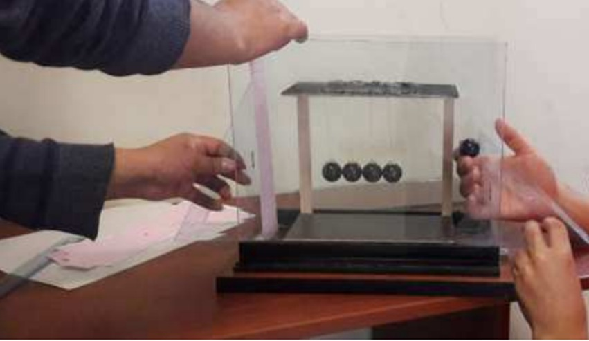

¿Por qué a través del péndulo de Newton se puede demostrar el principio de la conservación de la energía?
El objetivo general del péndulo de Newton es ilustrar y demostrar principios físicos fundamentales, como
la conservación del momento lineal y la conservación de la energía. A través de la observación del movimiento
de las bolas, el péndulo de Newton muestra cómo la energía se transfiere de una forma a otra dentro de un sistema
cerrado y cómo se conserva el momento lineal durante este proceso.
El objetivo específico del péndulo de Newton es ilustrar y demostrar de manera visual y práctica los principios
fundamentales de la conservación del momento y la energía en física. A través de este dispositivo, se pueden
observar cómo se transfieren la energía cinética y el momento lineal de una bola a otra dentro de la fila, así
como la conservación de estas dos magnitudes durante el proceso.
Entendimiento de principios físicos fundamentales: El péndulo de Newton proporciona una plataforma para
comprender conceptos físicos básicos, como la conservación de la cantidad de movimiento y la energía.
Aplicaciones en la educación: El péndulo de Newton es una herramienta valiosa en la enseñanza de la física,
ya que permite a los estudiantes visualizar y experimentar los conceptos abstractos de una manera concreta y tangible.
Aplicaciones tecnológicas: Aunque el péndulo de Newton es un dispositivo educativo simple, los principios
que ilustra tienen aplicaciones en diversos campos tecnológicos
Innovación y descubrimiento: La investigación continua sobre el péndulo de Newton puede llevar a descubrimientos
y aplicaciones innovadoras. Aunque es un dispositivo conocido desde hace tiempo, aún hay aspectos de su comportamiento
que podrían explorarse más a fondo, lo que podría conducir a nuevas ideas o tecnologías.
El experimento del péndulo es muy fundamental ya que este ilustra conceptos importantes de la física como lo pueden ser:
1. El estudio del movimiento armónico simple (MAS): Es un tipo de movimiento periódico en el que la fuerza restauradora
es directamente proporcional a la distancia del objeto desde su posición de equilibrio y siempre actúa en la dirección opuesta
al desplazamiento.
2. Medición precisa del tiempo: El péndulo ayudaba a medir el tiempo porque su movimiento oscilante constante permitía
calcular intervalos regulares. Al ajustar la longitud del péndulo, se ajustaba la velocidad del reloj, lo que resultaba en relojes
mecánicos precisos utilizados durante siglos.
3. Aplicaciones en física y tecnología: El estudio del péndulo ha llevado a importantes aplicaciones en campos como la
ingeniería, la física y la tecnología. Por ejemplo, la absorción de energía en los amortiguadores de automóviles se basa en
principios de péndulo.
4. Principio de conservación de energía: El péndulo es un excelente ejemplo para comprender el intercambio de energía
potencial y cinética. Muestra cómo la energía se conserva a medida que el péndulo oscila entre su posición más alta
(energía potencial máxima) y su posición más baja (energía cinética máxima).
Los antecedentes del péndulo de Newton se remontan a las observaciones sobre el movimiento de los péndulos realizadas por
Galileo Galilei en el siglo XVII. Galileo estudió el movimiento de los péndulos y descubrió que el periodo de oscilación (el tiempo que tarda en completar un ciclo) es independiente de la amplitud de la oscilación, siempre y cuando la amplitud sea pequeña. Este principio es fundamental para el funcionamiento del péndulo de Newton. El dispositivo que conocemos como el péndulo de Newton fue inventado y popularizado en el siglo XIX. Fue llamado así en honor a Isaac Newton debido a su contribución a la comprensión de la física que subyace en su funcionamiento.1. Péndulo: Un objeto suspendido de un punto fijo de manera que pueda balancearse libremente bajo la influencia de la
gravedad. 2. Newton: Nombre dado al dispositivo que consiste en una serie de bolas suspendidas en hilos de igual longitud, utilizado para demostrar principios físicos como la conservación del momento y la energía. 3. Conservación del momento lineal: Principio físico que establece que en un sistema cerrado, la cantidad total de momento lineal (también conocido como momento o cantidad de movimiento) se conserva, es decir, no cambia con el tiempo, siempre que no haya fuerzas externas actuando sobre el sistema. 4. Conservación de la energía: Principio físico que establece que la energía total de un sistema cerrado se conserva; es decir, la energía total dentro del sistema permanece constante con el tiempo, aunque puede transformarse entre diferentes formas de energía (como energía cinética y potencial) dentro del sistema. 5. Transferencia de energía: Proceso mediante el cual la energía se mueve de un objeto a otro, o de una forma a otra. En el péndulo de Newton, la energía potencial gravitatoria se convierte en energía cinética a medida que la bola es levantada y luego liberada, y esta energía cinética se transfiere a las bolas adyacentes a medida que golpea y hace que se muevan. 6. Amplitud: En el contexto del péndulo de Newton, se refiere al ángulo máximo que alcanza una bola cuando se mueve hacia arriba después de ser golpeada por otra bola.¿El periodo de oscilación del péndulo de Newton varía de en función de la longitud de los hilos?
• 1 canica de acero de 100 g de masa y 3 cm de diámetro.
• 9 canicas de vidrio de 20 g de masa y 2.5 cm de diámetro. • Hilo delgado de pescar. • Pegamento. • Cuatro placas de vidrio de 25X30 cm • Dos placas de vidrio de20X30 cm. • Chupones para vidrio. • Dos barras de base cuadrada de madera de 20cm de altura y 2X2 cm espesor. • Una placa de triplay. • Dos perfiles metálicos. • Silicona para vidrio. • Silicona en barra. • Pistola para silicona. • Tijeras. • Reglas y escuadras. • Marcadores.1. Cortar 5 cuerdas de 40 cm de longitud y luego marcar sus centros.
2. Pegar las canicas por el centro de las cuerdas, de tal manera que, al colgar las esferas, las tensiones en las cuerdas concurran a su centro de masa. Esperar a que seque. 3. Pintar las canicas 4. Elegir una placa de vidrio de 20X30 como base, unir usando dos perfiles metálicos las dos placas de 25X30 de manera que están paralelas entre si separadas a 14 cm y perpendiculares con la base. (Usar la silicona para pegar los vidrios y perfiles metálicos). 5. Unir las barras de madera a los extremos de un mismo lado (largo) de la placa de triplay. 6. Marcar en la placa 5 líneas ubicadas a 2.5 cm una de otro en un lado (largo) y otros 5 al otro borde. 7. Pegar los extremos de la cuerda en las 2 primeras líneas que se encuentra una en cada lado del largo de la placa. Seguir el proceso hasta que la cuerda de la quitan canica se haga corresponde con las dos últimas líneas opuestas por el largo de la placa. 8. Jalar con fuerza y cuidadosamente las cuerdas para poder calibrar las canicas, las cuales cada lado de las cuerdas debe de tener 10 cm de longitud. Los centros de masa deben estar a la misma altura (9 cm), alinear de manera eficaz las 5 canicas. 9. Introducir la estructura de madera en la estructura de vidrio, esto nos permitirá que nuestro sistema este aislado del viento y también le otorga una mejor presentación.Después de ejecutar el experimento los resultados que se pudieron observar fueron los siguientes:
1. Transferencia de energía y momento: Se ve cómo la primera bola que cae transfiere su energía cinética y momento a la
segunda bola, que luego transfiere esta energía a la tercera bola, y así sucesivamente a través de la fila de bolas. 2. Conservación de la energía y el momento: Aunque la energía se pierde gradualmente debido a la fricción y otras pérdidas en el sistema, verás que la energía total y el momento lineal del sistema se conservan en general. Esto significa que la suma de la energía cinética y la energía potencial en cualquier momento dado será constante. 3. Oscilación:Las bolas oscilarán de un extremo al otro de la fila hasta que la energía se disipe lo suficiente como para detener el movimiento. Dependiendo de las condiciones del experimento, este proceso puede repetirse antes de que el movimiento se detenga por completo.El péndulo de Newton es un dispositivo que consiste en una serie de esferas suspendidas en hilos, que, al ser liberadas, muestran
una interesante transferencia de energía cinética y potencial entre las esferas. Aunque comúnmente se considera como un simple juguete, el péndulo de Newton presenta varias problemáticas interesantes:1.Conservación de la energía: Aunque el péndulo de Newton parece desafiar la conservación de la energía al oscilar de manera
aparentemente perpetua, en realidad, experimenta una lenta pérdida de energía debido a la resistencia del aire y la fricción en los puntos de contacto de las esferas. 2.Transferencia de energía: A medida que las esferas del péndulo de Newton chocan entre sí, parte de la energía cinética se transfiere de una esfera a otra. Este proceso no es perfectamente eficiente y algunas pérdidas de energía ocurren en de calor. 3.Precisión y caos: Aunque el movimiento del péndulo de Newton parece seguir un patrón predecible, es altamente sensible a las condiciones iniciales. Pequeñas variaciones en la posición o velocidad de las esferas pueden llevar a cambios significativos en su movimiento, lo que lo convierte en un sistema caótico.1.En el péndulo de Newton se puede explicar la conservación de la energía y momento lineal. Si bien no se pude observar
empíricamente la energía, esta se puede expresar matemáticamente y explicar de esta manera tal conservación y notando también que esta se puede transformar en otra forma de energía como consecuencia de esta característica. 2.Gracias a nuestro experimento podemos apreciar que todo cuerpo posee energía, y esta depende de la posición del cuerpo respecto de un referente, o también de la velocidad con la que se mueve. 3.En un sistema ideal la oscilación y choques en el Péndulo de Newton seguirían sempiternamente. Pero en la realidad esto no se cumple pues existen múltiples factores como el rozamiento del aire, de los cables por la cual no se conserva al 100% momento lineal y energía cinética 4.En un sistema donde no actúan fuerzas externas, en ellas se conserva siempre en momento lineal. 5.A partir de las definiciones ya presentadas, este choque es caracterizado como unidimensional, puesto que sus centros de masa, las velocidades antes y después permanecen en la línea de choque. 6.El choque causado por las esferas es de naturaleza elástica, y esto se debe a sus características, tales como: igual masa, esferas idénticas y el medio donde se llevará acabo (uso del sistema aislado). 7.Al ser catalogado como choque elástico, la energía cinética permanece constante en toda interacción ocurrida entre las esferas. 8.En cualquier otro sistema que no cumpla con las condiciones que se trabajó, no se puede apreciar el principio de la de la energía o momento lineal ya se de manera individual o en forma conjunta.